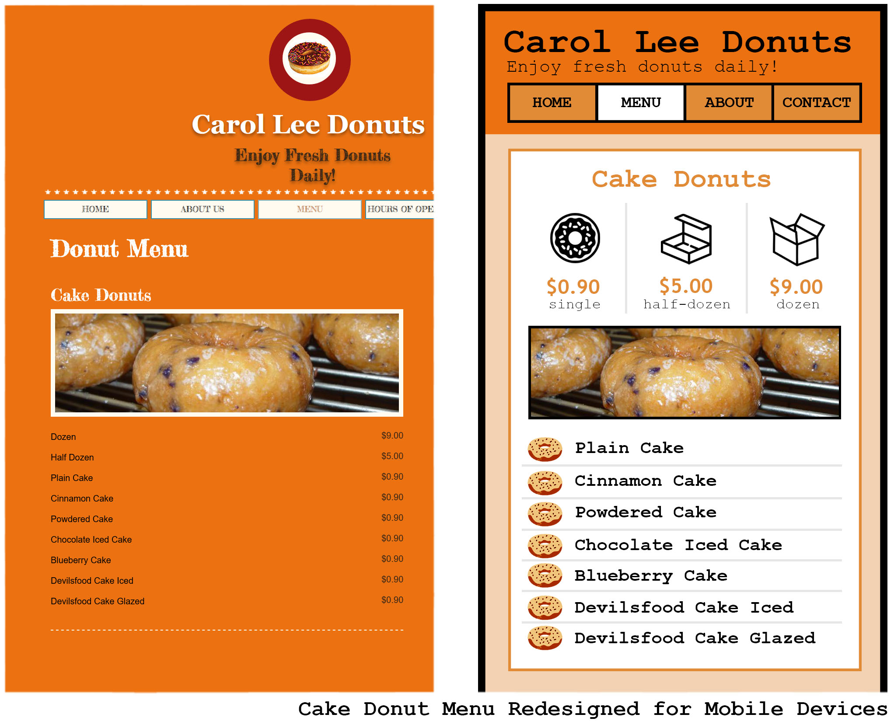
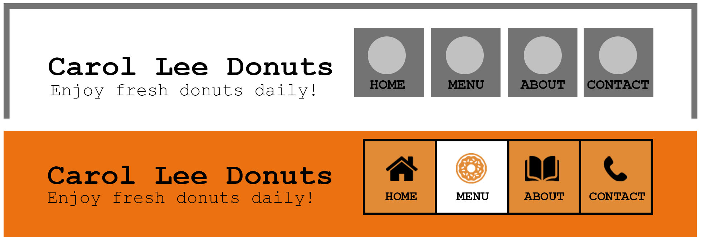

by Brandon Falcone
Sketch Designing
Problem Identification
Design Solutions
Prototype
Responsive Design
The logo takes up too much space and the header bar is located in the middle of the screen creating too much negative space. This leaves only 25% of the screen available for unique page content, and less than 10% on the mobile version!
Pricing information is unnecessarily repeated throughout the menu. There's poor structure and too much empty space, leaving important menu items like jelly-filled donuts to be found at the bottom of the page. All of these issues can affect the user's readabilty and understanding of the products being sold.
I redesigned the website header to take up less space and restructured the header tabs by merging the 'About Us' and 'Hours of Operation' tabs. The operating hours could additionally be placed on the 'Contact Us' page.
Donut prices now appear at the top instead of being repeated for each menu item. Borders, better spacing, and larger fonts are used to improve readabilty. Icons, used together with labels, improves appearance and provides faster understanding by the user, all adding to a better user experience.
In the prototyping phase, it was revealed that the appearance of the website header could be improved on. I continued iterating the design until I created one that would provide the best clarity to the user.
I developed a design that looks great and performs well on desktop and mobile devices. I significantly increased the amount of space for unique page content being displayed on mobile devices from 10% to 90% by scaling down the header, grouping related content together, and minimizing empty space.